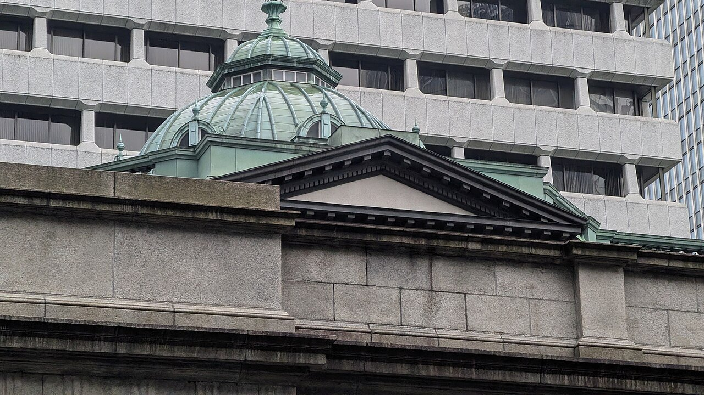
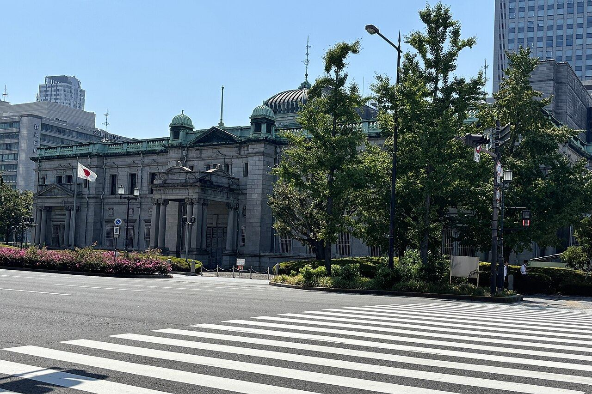
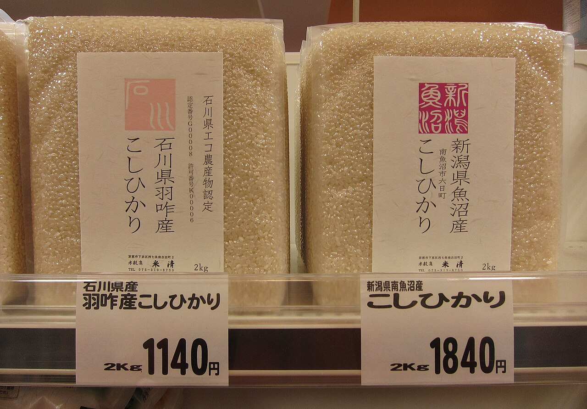
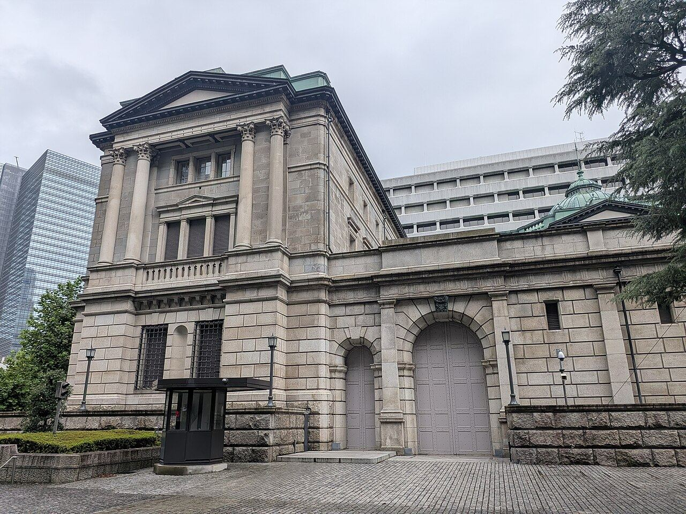

東京・日本橋、2024年3月19日。日本銀行（日銀）が、8年続けてきたマイナス金利をやめると発表しました。金利を上げるのは2007年以来、17年ぶり。テレビや新聞は、大きなニュースとして伝えました。
前の記事で見たように、日銀は物価が年2%ずつ上がることを目標にしています。でも私たちは日銀に口座を作れませんし、街に日銀のATMもありません。そんな銀行が、何をしているからこれほどニュースになるのでしょう。そして目標は、なぜ0%ではないのでしょう。

私たちは口座も作れないのに、金利を少し動かすだけで大ニュースになる日本銀行。その3つの顔と、金利で物価に働きかけるしくみを、図と写真でたどります。目標がなぜ「年2%の値上がり」なのか、一緒に考えてみませんか。
東京・日本橋、2024年3月19日。日本銀行（日銀）が、8年続けてきたマイナス金利をやめると発表しました。金利を上げるのは2007年以来、17年ぶり。テレビや新聞は、大きなニュースとして伝えました。
前の記事で見たように、日銀は物価が年2%ずつ上がることを目標にしています。でも私たちは日銀に口座を作れませんし、街に日銀のATMもありません。そんな銀行が、何をしているからこれほどニュースになるのでしょう。そして目標は、なぜ0%ではないのでしょう。
金利を上げ下げして、物価の上がり方を年2%ほどに整えている。
日本銀行は1882年に開業した、日本の中央銀行です。中央銀行とは、国のお金のしくみの真ん中に立つ銀行のこと。アメリカの連邦準備制度理事会（FRB）や欧州中央銀行（ECB）も、その仲間です。
仕事は、大きく3つの顔に分けられます（Fig.01）。1つめは、お札を世の中に送り出す発券銀行の顔。お札を刷るのは国立印刷局ですが、それを受け取って銀行に渡し、世の中に出すのは日銀です。
2つめは銀行の銀行の顔。別の記事「銀行は、預かったお金をどう使っている？」でも見たように、銀行は日銀に口座を持ち、振り込みなどのお金のやりとりをそこで片づけます。3つめは政府の銀行の顔。税金や年金など、国のお金（国庫金）を預かって出し入れします。
日銀は全国に支店を持ち、お金の博物館も開いています。

そしてもう1つ、日銀にしかできない大きな仕事があります。日本銀行法が理念として定める物価の安定、つまり物の値段の上がり方をほどよく保つことです。その道具が、次に見る金利です。
日銀が物価に働きかける、いちばんの道具が金利です。金利は、お金を借りるときの「値段」。日銀が動かすのは、銀行どうしがひと晩だけお金を貸し借りするときの金利で、これを政策金利と呼びます。
水道の蛇口にたとえると、わかりやすいかもしれません。政策金利を下げるのは、蛇口を開くこと。銀行も低い金利で貸せるようになり、家を買う人や工場を建てる会社が、お金を借りやすくなります。町にお金が流れ、物がよく売れ、値段は上がりやすくなります。
金利を上げるのは、蛇口をしめること。借りたお金の利子が増えるので、買い物や投資がひかえめになり、値上がりの勢いが落ち着きます（Fig.02）。
では、目標はなぜ0%ではなく2%なのでしょう。日銀が挙げる理由の1つが「のりしろ」です。金利は、ゼロより下へはほとんど下げられません（日本のマイナス金利も −0.1% でした）。
物価が少し上がっている国では、金利もそのぶん高めになりやすい。ふだんから金利に余裕があれば、景気が悪くなったとき、下げて蛇口を開く余地が残ります。
前の記事で見た、物価の下落と景気の冷えこみがくり返す悪い循環（デフレスパイラル）に、落ちにくくする備えでもあります。アメリカやユーロ圏の中央銀行も、物価が年2%ずつ上がることをめざしています。

日本では1990年代の終わりから、金利がほとんどゼロの時代が長く続きました。物価が上がらないので、蛇口をいっぱいに開いたのです。1999年からは、政策金利をできるだけ低くするゼロ金利政策などがとられました。
2016年2月には、さらに一歩進めてマイナス金利を入れます。銀行が日銀に預けるお金の一部に、−0.1%の金利をつけました。預けると、利子をもらうどころか払うことになる。金利全体を押し下げ、お金を借りやすくするねらいでした。
2024年3月、マイナス金利が終わります。給料と物価がそろって上がる動きが見えてきた、と日銀は説明しました。2025年の物価は3.2%上がり、目標の2%を上回っています。日銀はその後も少しずつ金利を上げ、2026年11月現在、政策金利は1.25%程度です。
金利が上がると、暮らしにも響きます。預金の利子は少し増えますが、変動金利（借りたあとで金利が変わるタイプ）の住宅ローンを借りている人は、返すお金が増えます。日本とアメリカの金利の差は、1ドルが何円になるか、つまり円の値打ちにもかかわってきます。その話は次の記事で。
どのくらいの速さで上げるかは、日銀の中でも意見が分かれています。2026年9月の会合では、2人の委員が、据え置きが望ましい、このタイミングでの利上げは適切ではない、などとして反対しました。
10月の会合では逆に、1人の委員が1.5%への引き上げを提案し、否決されています。物価の基調が目標に届き、利上げのペースを速める段階に入った、という考えからでした。
金利を決める政策委員会の人数。総裁、副総裁2人、審議委員6人日本銀行による
全国にある支店の数。ほかに国内の事務所が14、海外の事務所が7日本銀行による
資本金1億円のうち政府が出した割合。残りは民間で、その出資証券は株のように売り買いされている日本銀行による

日本橋の本店の本館を上から見ると、建物の形が漢字の「円」に似ている、とよくいわれます。お金の単位をかたどったのでは、と思いたくなります。
ところが本館が完成した1896年、お札に書かれた単位は旧字体の「圓」でした。いまの「円」の字が使われるようになるのは、戦後のことです。日銀も、竣工当時の資料は関東大震災で焼けて残っていないとしたうえで、「円」の形をねらったわけではないと思われる、と答えています。偶然にしては、できすぎた話です。
地図アプリの航空写真で、日本橋の日本銀行を探してみてください。ニュースで聞く「日銀」が、少し身近に見えてくるはずです。